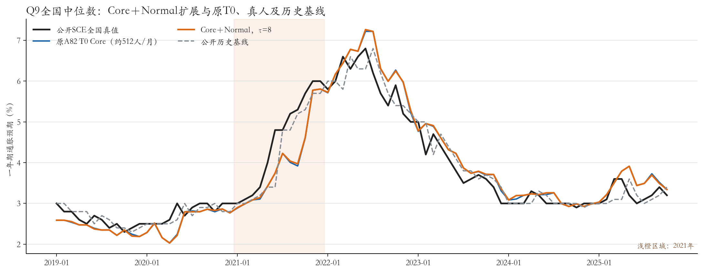
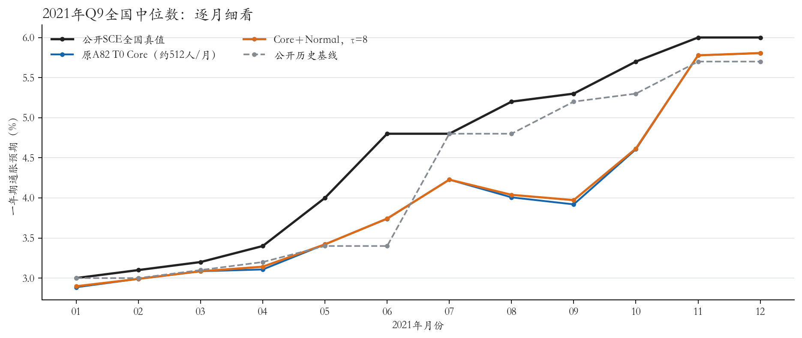
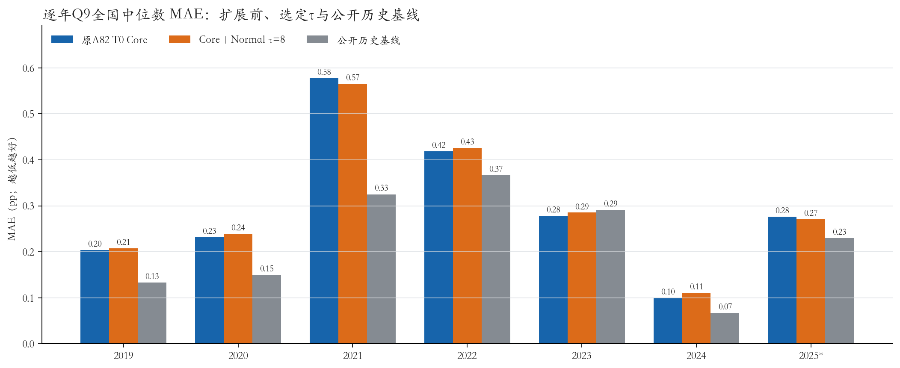
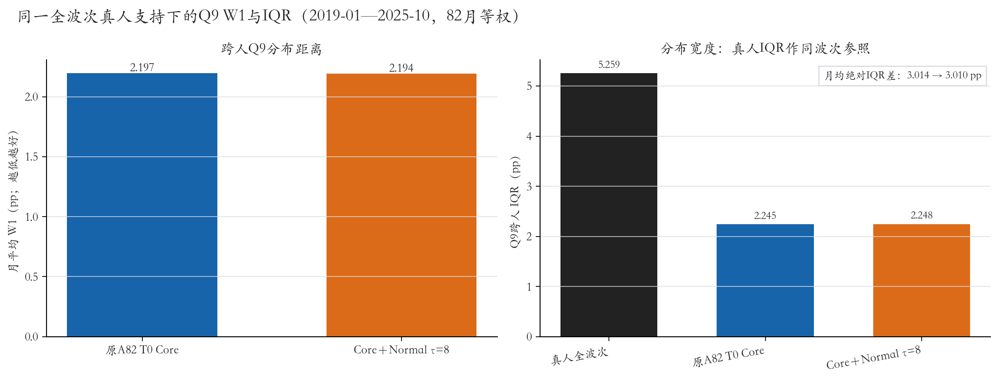
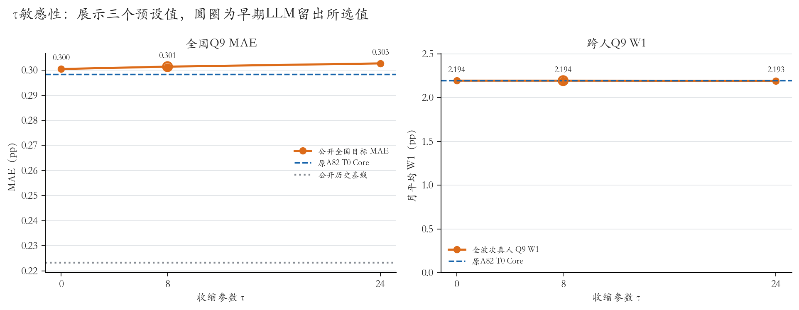

Core＋Normal后全期Q9 MAE上升 0.003 pp：0.298 → 0.301 pp
主指标先看公开SCE全国Q9中位数 MAE；辅助看同一全波次真人分布上的Q9 W1与跨人IQR。当前结论只描述这82个月，不把统计扩展当作新增LLM证据。
1．82个月水平与2021年细节
全期曲线同时显示公开SCE全国真值、原A82 T0 Core估计、选定 τ=8 的Core＋Normal估计，以及冻结的公开历史基线。原T0以每月约512份已有Core回答和原设计权重汇总形成；扩展保留Core原始调查权重，只对Normal与明确允许的缺失字段作统计预测。


2．逐年主指标：全国Q9中位数 MAE
全期 MAE：原T0 0.298 pp，扩展后 0.301 pp，公开历史基线 0.223 pp。逐年原T0→扩展：2019年 0.204→0.208 pp；2020年 0.231→0.239 pp；2021年 0.577→0.565 pp；2022年 0.418→0.426 pp；2023年 0.278→0.285 pp；2024年 0.100→0.111 pp；2025年 0.276→0.270 pp。2025年只含1—10月。

3．分布辅助指标：同一全波次真人支持
扩展前后均与同月同一份全波次、有效且正权重的真人Q9均值分布比较；W1由经验CDF差的绝对值精确积分。右图把真人月均IQR作为参照，并直接显示原T0与扩展的平均IQR；月均绝对IQR差为 3.014 → 3.010 pp。先前的同名单 W1 2.219 pp 来自另一支持口径，与本次全波次支持不同，不能直接比较。

4．τ敏感性与选择边界
τ候选为0、8、24。最终取值 τ=8 来自封存预测包：在201901—202212的LLM回答遮蔽留出比较中，先最小化月/种子Q9中位数绝对误差，再以W1打破平局；偏好更小τ。对应中心MAE为 τ0 0.177979 / τ8 0.177573 / τ24 0.180194 pp；τ=8相对τ=0仅差 0.000406 pp。选择在读取真人全波次真值之前完成，差异很小，不把τ=8称为已确认优越参数。

后34个月 MAE：原T0 0.215 pp，扩展 0.219 pp，公开历史基线 0.194 pp。组合敏感性：早48月MSE拟权选定τ模拟权重 0.134964，后34月 MAE 0.184980 pp；原T0的MSE拟权组合权重 0.133976，后34月 MAE 0.184125 pp。MAE拟权的选定τ模拟权重为 0.000。这些是回顾性组合摘要，不是未观察过的未来测试。
解释边界
- Normal统计预测记录已生成；本次没有新增LLM调用或真人答卷，也未重拟Q9密度。
- MAE使用固定公开SCE月指标；扩展前后W1/IQR使用相同的逐月全波次真人分布。
- τ只按预先封存的LLM回答遮蔽留出规则确定，未使用当前真人答案选参。
- 全国真值与历史基线沿用原A82 T0评价；48/34月组合是回顾性汇总。
- 全波次真人分布仅用于评价，不参与Core＋Normal预测构造。
- Core实际回答-only敏感性分析不替代冻结的原T0对照。
来源文件与复现信息
本页从冻结评价目录生成；报告程序先核验 evaluation manifest 中 summary.json、monthly_public.csv、yearly.csv 的哈希。来源清单：
manifest.json· SHA2568bd3c124f1f8305eeb39d7682004b2470ded1e68b88c02887811164401aab365summary.json· SHA256fdf43758c9c1d2bb80010e6c60e7b761a25fe2b79df6fa038f14df6bca97ee6dmonthly_public.csv· SHA256cfaae6aa7d54eccc4ddc08fe90168f20c5aac5cc07428c76ff0ba867b8b24eacyearly.csv· SHA2560fc5310a12f8f22ed30f04555fa0ffdc94a615bbf1938d2fd8090c252aa3f600
本页数值见同目录 readout.json；逐月公开聚合仍以原评价目录中的 monthly_public.csv 为准。原始个体答卷、提示与回复未复制进报告。